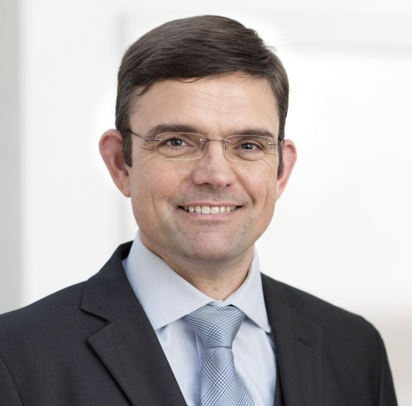
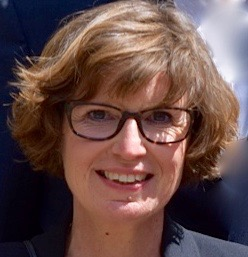
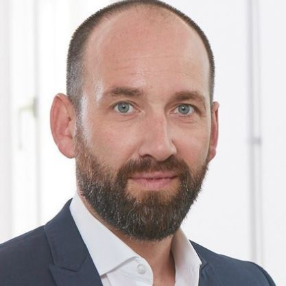
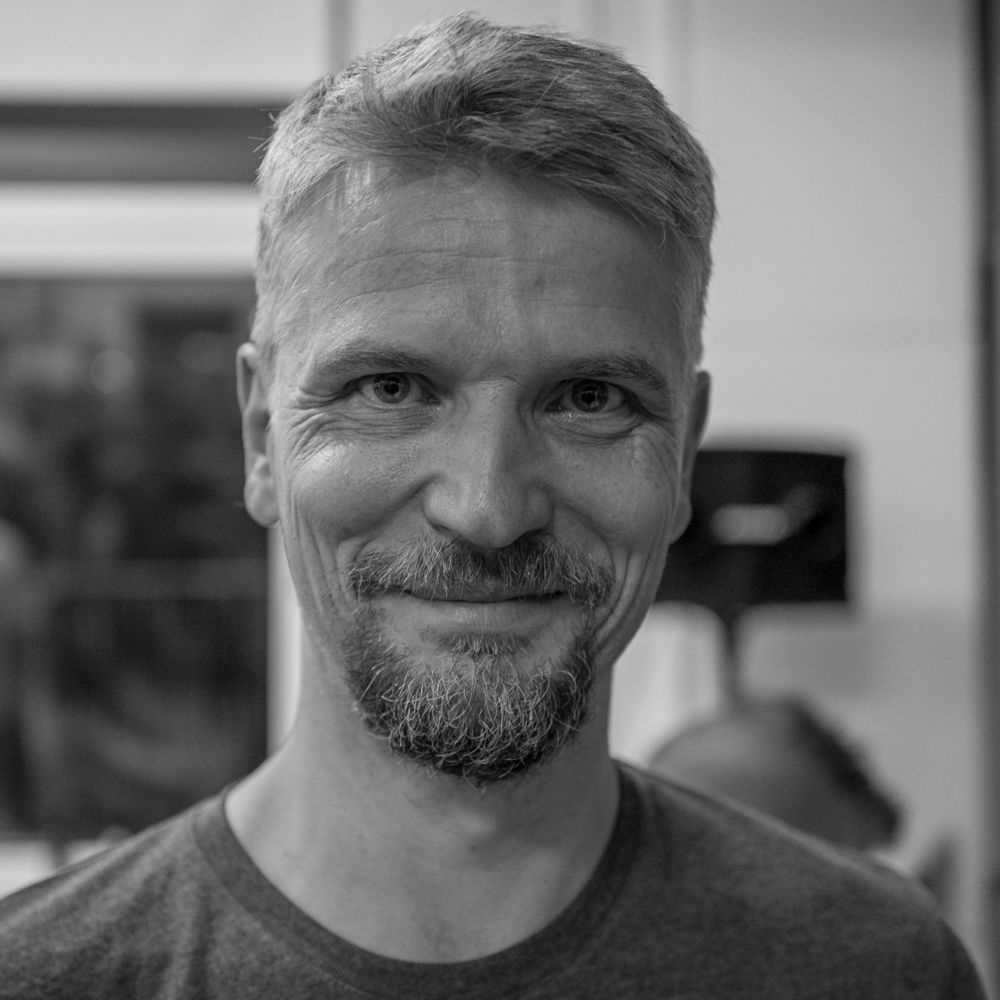
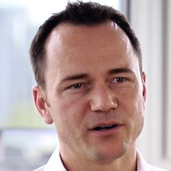
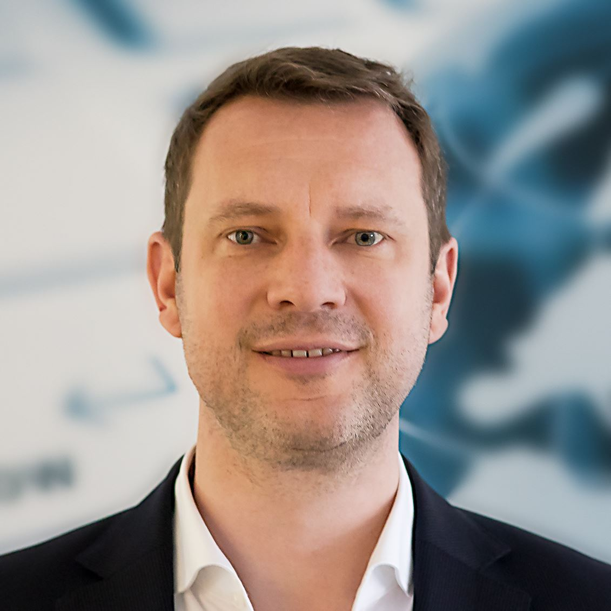
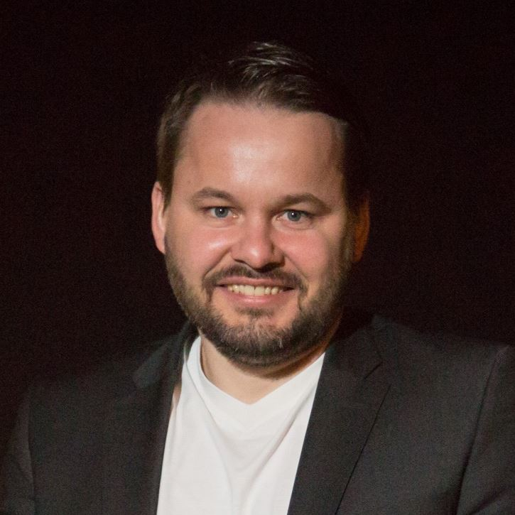
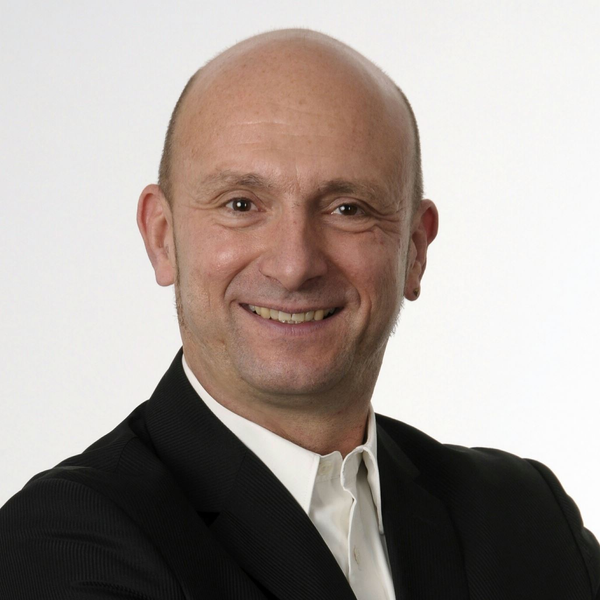
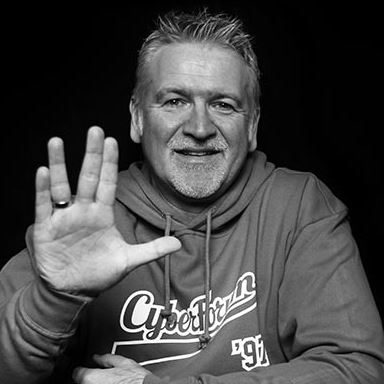
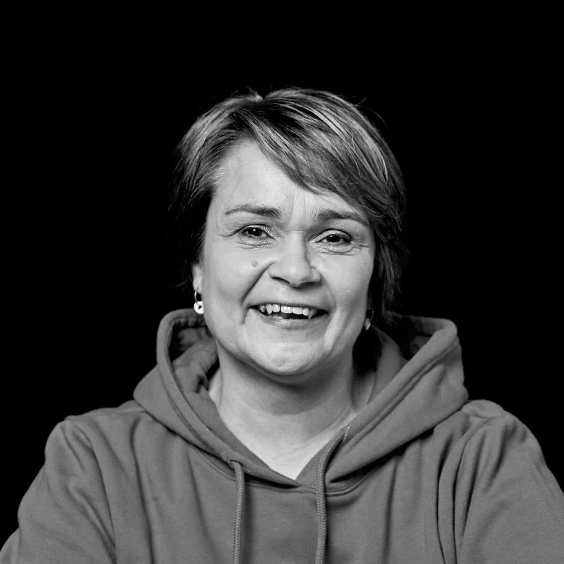

Die Teilnehmer werden durch diese erfahrenen Mentoren unterstützt
Aus Datenschutzgründen werden wir die Kontaktdaten der Mentoren hier nicht veröffentlichen.
Bei Interesse könnt ihr diese aber gerne
bei uns nachfragen.
ALEXANDER GLÖCKNER
Berater bei Glöcner & Schuhwerk (KARLSRUHE)

Strategie, Business Process Management, Unternehmensorgainsation, Risikomanagement, Qualität, Datenschutz und IT-Sicherheit
Seit ca. 20 Jahren befasse und berate ich im Qualitätsmanagement Unternehmer und Führungskräfte ihre Geschäftsprozesse zu verbessern bzw ihr Unternehmen zielführend zu organisieren. Ganz nach meinem Firmenmotto, Qualität kostet weniger als keine Qualität, untersütze ich auch seit ca. einem Jahr Startups Fehler in der Gründungsphase zu vermeiden.
ANITA BERRES
Selbstständige Unternehmerin (Mittelstands-/Start-Up-Beratung und Coaching/Training (WALDBRONN-REICHENBACH)
14 Jahre erfolgreiche Vertriebstätigkeit für Arbeitgeber in der IT-Branche (Direktvertrieb, Fachhandels-Vertrieb, Aufbau und Leitung Key Account Management) /// 21 Jahre selbstständig mit den Themen Vertrieb, Strategie, Team
BIANKA REINHARDT
Selbständige Marketingberaterin und Coach, Referentin für Marketing und Öffentlichkeitsarbeit bei der CardProcess GmbH (KARLSRUHE)

Persönlichkeitsentwicklung, Zeitmanagement, Präsentations- und Kommunikationstechniken, Entwicklung von Marketingstrategien
und Kommunikationskonzepten für die interne Kommunikation und Öffentlichkeitsarbeit, Markenpositionierung und Aufbau
der Corporate Identity, Aufbau und Strukturierung von Marketingabteilungen, Organisation von Marketingprozessen, Budgeterstellung-
und -management.
Bianka Reinhardt ist seit mehr als 25 Jahren im Bereich Marketing und Kommunikation tätig, arbeitet als selbständige Beratierin und Business Coach. Sie hat verschiedene Marketingpositionen mit Führungsverantwortung in mittelständischen Unternehmen in den Branchen IT, Internet, eCommerce und in der Finanzdienstleistungsbranche bekleidet. Sie weiß aus ihrer Berufserfahrung um die Herausforderungen von StartUps und Unternehmen, die im Aufbau begriffen sind. Sie stammt aus einem Unternehmerhaushalt und kennt die Anforderungen an eine selbstständige Tätigkeit.
CLAUDIA MÄRZ-SAX
Selbstständige Beraterin für die Unternehmen s.a.x. Karlsruhe und GDEKK Köln (KARLSRUHE)
Umfassende Berufserfahrungen - siehe Profil auf Xing oder LinkedIn 1998 Gründerin Medical Columbus AG Königstein - erfolgreicher Startup gegründet als AG! Erfahrung von Investorensuche bis Börsengang.
DIRK KEUNE
Geschäfsführer bei der Inventioncase Beteiligungs GmbH (KARLSRUHE)
20 Jahre Selbstständig, 5 GmbHs und eine Aktiengesellschaft gegründet (alle noch existent), 17 Patente angemeldet. Ich liebe gute Ideen, auch wenn sie auf den ersten Blick keinen Erfolg versprechen. Aus Ideen Potential zu schöpfen und neue Themen ausarbeiten und an den Markt bringen - das wäre mein Hobby, wenn es nicht mein Beruf wäre. Dieses Wissen setze ich selbst ein, teile es aber auch gerne.
DR. KLAUS NEB
AR Vorsitzender Michelin DE (KARLSRUHE)
Produktion Verwaltung Vertrieb In internationalem Umfeld Begleitung von Consultant- und IT- Unternehmen als AR
FLORIAN BUZIN
CEO bei STARFACE GmbH (KARLSRUHE)
Mein erstes Unternehmen gründete ich mit 18. Nicht jedes wurde ein großer Erfolg, doch lernen könnte man dabei viel. Mit STARFACE konnten wir erfolgreich VC Geld akquirieren und das anorganische Wachstum kennenlernen. Von 5 auf >80 Mitarbeiter in einem technologisch sehr fördernden Markt. Parallel engagiere ich mich seit einiger Zeit als Angel Investor bei spannenden Projekten.
FRANCESCO LOTH
Geschäftsführer bei ETECTURE (BADEN BADEN )

finance, validierung business model, netzwerk
Francesco Loth ist seit über 15 Jahren als Unternehmer und Geschäftsführer in der digitalen Welt tätig. Er war maßgeblich an der Neugründung und den Ausbau von 2 Agenturen beteiligt. Zuletzt war er Geschäftsführer bei der UDG nach einem erfolgreichen Asset Deal. Aktuell ist Francesco Loth Geschäftsführer der ETECTURE und Gründer eines Maschinenbauunternehmens Karlsruhe Schwerpunkt Sondermaschinenbau und Automatisierung.
GUNNAR LOTT
Geschäftsführer Visibility Communications (KARLSRUHE)

Marketing, Storytelling, Pitching, Marktfähigkeitsprüfung
Langjähriger Medienmanager, jetzt Agenturinhaber und nebenberuflicher Influencer. Games-Experte. Journalist.
HANS-GEORG EDLEFSEN
Freier Berater (WALDBRONN)
35 Jahre Berufserfahrung in unterschiedlichen Branchen (von Chemie über Handel, Konsumgüter bis zur Energiewi.) mit Erfahrungsschwerpunkten im Controlling, in der allgemeinen Unternehmensführung (als kfm GF und kfm Vorstand) und in der Energiewirtschaft
HEIKO STAPF
Geschäftsführer Cyber Manufaktur und Emendare (KARLSRUHE)
"Keep calm and innovate" Heiko Stapf ist Certified Scrum Trainer. Sein besonderes Interesse gilt der Entwicklung innovativer Produkte und Dienstleistungen und der Rolle des Product Owners in Scrum. Er ist Geschäftsführer der UX Agentur Cyber Manufaktur GmbH und der agilen Unternehmensberatung Emendare GmbH & Co. KG. Agile Methoden sind für Ihn der Schlüssel für eine erfolgreiche Produktentwicklung.
HEINZ T. ROTHERMEL
Selbständiger Coach, Hochschuldozent, Startup-Berater und Mentor (KARLSRUHE)

Über 25 Jahre Erfahrung als selbständiger Unternehmer, Führungskraft von über 250 Mitarbeitern, Erfahrung gleichermaßen in der unternehmerischen Praxis und natürlich auch in der Theorie durch jahrzehntelange Coach- und Trainertätigkeit. Sämtliche Höhen und Tiefen als Unternehmer erlebt. Dadurch bin ich in der Lage Existenzgründer vor möglichen Fehlern zu bewahren. In den vielen Jahren habe ich mehr als 50 Startupunternehmer begleitet, gecoacht, mit Ihnen gelitten und mit ihnen Erfolge gefeiert.
JAN HICHERT
Business Angel (KARLSRUHE)

Teams finden, Prototypen bauen, Ideen validieren, Geschäftsmodelle entwickeln, Strukturieren und Finanzieren
Jan Hichert ist seit 17 Jahren als Entrepreneur und Business Angel in Deutschland und USA aktiv. Er hat selbst zwei Unternehmen aufgebaut und mehrere Startups finanziert. Jan liebt die Zusammenarbeit mit enthusiastischen Gründern und das kreative Chaos in Startups.
JAN SCHÖTTELNDREIER
VP eCommerce Solutions bei asknet AG / freier Berater (KARLSRUHE)

Ideen validieren, Business Cases, Vertrieb & Prozesse bauen
Generalist, 15 Jahre im Produktmanagement, Vertrieb, Marketing und Geschäftsführung. Zunächst Financial Services, dann eCommerce, Software, Internet.
JOACHIM TATJE
Gründer und Inhaber der PR Agentur "ViATiCO Strategie und Text" (BRUCHSAL)
Joachim Tajte hat Elektrotechnik an der Uni KA studiert und danach etliche Jahre Elektronik entwickelt. Der Wechsel zu einem Start-up Unternehmen als Marketing- und Vertriebsleiter entsprach seinemTalent zu kreativen Tätigkeiten. Nach knapp acht Jahren erfolgreicher internationaler Tätigkeit machte sich Tatje 1993 als PR-Berater selbstständig. Seither berät und begleitet er mittelständische Unternehmen in allen Belangen der Unternehmenskommunikation.
JOHANNES HÄFELE
Business Angel (KARLSRUHE)
Johannes Häfele war viele Jahre als CFO im B2B und B2C-Handel tätig. Seit 56 Jahren ist er im Cyberforum Karlsruhe aktiver Business Angel und Mentor für Startups (u.a. "Meine Spielzeugkiste")
KLAUS WELLE
CTO und Mitgründer von Selfbits (KARLSRUHE)
Klaus ist seit 2015 als Mitgründer der Selfbits GmbH in der Karlsruher Startupszene aktiv. Als CTO ist er für die Selfbits Cloud Plattform sowie für die Entwicklung von Web- und Mobile-Anwendungen für Kunden verantwortlich. Die Erkenntnisse aus der Zeit als Existenzgründer sowie die Erfahrung in der schnellen Realisierung von Business-Anwendungen gibt er im Rahmen von Grow gerne weiter.
MARC ZACHERL
Co-founder, Geschäftsführer (KARLSRUHE)

Business Development, Marketing, Sales, IT, Pitch
Ich bin überzeugt, dass meine bisherigen Erfahrungen aus verschiedenen Projekten in der Unternehmensberatung und auch in meinem eigenen Start-up erfolgreich beitragen könnten. Ich möchte Menschen helfen und sie dabei unterstützen Ihre Ideen zu verwirklichen und Ihre Träume leben zu können. Gerade im IT Bereich, Business Development, Aufbau von Teams und Bereichen, Vertrieb, Marketing und Netzwerke kann ich sehr gut beitragen. Der Weg auf die Spitze ist eisern, jedoch lässt er sich mit Motivation, Engagement, Wissen und Durchhaltervermögen erreichen – dies möchte ich ebenso übermitteln und weitergeben.
MATHIAS THOMAS
Inhaber Dr. Thomas + Partner (KARLSRUHE)
Mathias is managing director and owner of Dr. Thomas + Partner GmbH & Co. KG. Dr. Thomas + Partner is one of the top logistics and software development companies in Europe providing the logistical IT for brands such as Pfizer, Otto or Hyundai. Mathias has great expertise in logistics, eCommerce and future technologies. He is a frequent keynote speaker promoting the idea of a truly local and sustainable approach of online business development.
MATTHIAS SCHULTZE
Geschäftsführer bei TechniData IT-Service GmbH (WÖRTH-MAXIMILIANSAU)

Marketing, Entscheiderpräsentationen vorbereiten, Business Plan, Kontakte/Netzwerk, Technologische Unterstützung (bspw. Hosting
einer Plattform in unserem eigenen RZ)
Der rote Faden in meiner mittlerweile über 30jährigen beruflichen Tätigkeit findet sich in den Themen „IT“ sowie „Führung und Management“. Aufbauend auf meinem Studium der Wirtschaftsinformatik (BA) und nach (leitenden) Funktionen in den Bereichen IT, Vertrieb, Architekturmanagement, Marketing und Einkauf in den Branchen „Energieversorgung“ und „Finanzdienstleistung“, bin ich seit September 2014 bei der TechniData IT-Service GmbH und dort seit April 2015 als Geschäftsführer tätig. Mit dem Kontakt zu Innovationstreibern und Start-Ups beschäftige ich mich schon seit gut 20 Jahren, bekomme hieraus viele Impulse und gebe im Gegenzug gerne meine Erfahrungen weiter.
MATTHIAS SCHÜRER
Präsident BWB (LINKENHEIM)
GF verschiedener Unternehmen. Mentor bei Start Ups, Karlsruhe und Absolventum, Mannheim.
MICHAEL RAUSCH
COO (KARLSRUHE)

Vertrieb & Akquise, Geschäftsführung
Vertrieb seit 1990, E-Commerce seit 1998, Führungserfahrung seit 1997
OLIVER KUPPLER
CEO/Geschäftsführer bei Selfbits GmbH (KARLSRUHE)
IT und FS Consulting @ KPMG, Co-Founder @ Selfbits
PETER GREINER
Geschäftsführer Grevest Beteiligungs GmbH (KARLSRUHE)
Seit 2009 habe ich mich bei verschiedenen Startup Unternehmen z.B. als Mitgründer, Gesellschafter, Geschäftsführer, Investor oder Coach aktiv eingebracht. Die Mitarbeit oder Unterstützung hat sich von der Pre-Seed über Seed- bis zur Wachstumsphase oder den Exit erstreckt. Im Rahmen meiner beruflichen Laufbahn habe ich zuvor viel Erfahrung, vor allem in Vertrieb und Marketing sowohl in nationalen als auch internationalen Konzernstrukturen gesammelt.
SOPHIE HORSTMANN
Geschäftsführung der LAFAM Holding GmbH (NEUSTADT A.D.W.)
Sophie Horstmann studierte Wirtschaftsingenieurwesen mit dem Schwerpunkt Maschinenbau. Nach dem Studium arbeitete sie für ein international tätiges Maschinen- und Anlagenbauunternehmen im technischen Vertrieb (Schwerpunkt China). Seit dem Frühjahr 2015 ist Sophie Horstmann als Investmentmanagerin für die LAFAM Holding GmbH tätig und wurde mit Beginn des Jahres 2017 in die Geschäftsführung berufen. Sophie Horstmann beurteilt in ihrer täglichen Arbeit Businesspläne unterschiedlicher Branchen sowie Produkte, trifft Investitionsentscheidungen und berät die Beteiligungen des Portfolios der LAFAM Holding GmbH strategisch.
STEFANIE MOLZBERGER
SaaS Sales Leader, IBM Digital Sales DACH (KARLSRUHE)
Ich bin seit 20 Jahren in der IT Branche und habe in dieser Zeit die Themen Channel / Business Development / Marketing und Sales uns unterschiedlichsten Blickwinkeln kennen gelernt und mir in dieser Zeit eine breite Expertise in diesen Feldern aufgebaut. Desweiteren durfte/konnte ich 2,5 Jahre mit Startups zusammenarbeiten und hierbei viele praktische Ansätze & Mentorings erfahren.
TANJA MÜLLER
Leitung Mentoring & Coaching (KARLSRUHE)

Pitchtraining, Business Model Development, Kontakte, Venture Captial Finanzierungen
Tanja Müller sammelte als gelernte Anwendungsinformatikerin und Industriekauffrau jahrelang Erfahrung im Geschäftsprozessmanagement, die sie heute in die Betreuung von Existenzgründern einbringt. Die analytische Beurteilung von Geschäftsmodellen ist ein Schwerpunkt ihrer Tätigkeit. Dabei bilden ihre persönlichen Erfahrungen in verschiedenen Branchen die Basis, um die Praxistauglichkeit von Business-Ideen zu evaluieren. An ihrem Beruf schätzt sie besonders den direkten Kontakt zu erfahrenen Business Mentoren, wie zu hochmotivierten Gründern, deren spannende Ideen sie immer wieder faszinieren.
TIM RIEDEL
GF bei der eyeworkers interactive GmbH (KARLSRUHE)
Ich bin seit 17 Jahren einer der Geschäftsführer bei eyeworkers und kümmere mich mit meinem Team um Kundenakquise und die Entwicklung und Einführung von webbasierter Software im Unternehmensumfeld.
ABILIO AVILA
Doktorand beim EnTechnon, KIT (KARLSRUHE)
Abilio Avila is responsible for the KIT Startup Accelerator upCAT and the coordination of the research activities at the Chair of Entrepreneurship and Technology Management. Furthermore, he is a Research Associate and Ph.D. candidate at KIT (Institute EnTechnon). His research focuses on partner ecosystems in the enterprise software industry.
Specialized in the software industry, his expertise includes new product development, product management, (agile) project management, partner networks, and business modeling. He trains executives and students in different areas such as Project Management, Strategy Implementation, Business Modelling and Agile Product Development. He has been teaching at the Hector Business School Executives Program since 2014 (Executive Master and MBA Fundamentals). Complementary, he is responsible for the design and coordination of executive training at EnTechnon. In addition, he coaches founders in Agile Product Development and Lean Methods as part of a Start-up Accelerator Program. He consults Start-ups in the enterprise software market.
He holds a degree in Information Technology from KIT and is certified as product owner and scrum master. He speaks German, Spanish and English.
BENEDICT HEBLICH
Doktorand beim EnTechnon, KIT (KARLSRUHE)
Benedict Heblich ist Doktorand am EnTechnon (KIT) zum Thema „Wertebewusstes Entrepreneurship“ sowie selbstständiger Trainer für Persönlichkeitsentwicklung. Er unterstützt in seiner Arbeit insbesondere Gründer und Gründungsinteressierte durch Workshops und individuelle Coachings dabei, die Gestaltung des eigenen Unternehmens auch an der eigenen Persönlichkeit auszurichten. Er arbeitet mit wissenschaftlichen und in der Praxis erprobten Methoden aus der empirischen Psychologie. Dabei liegt ein besonderer Fokus darauf die Gründer und Gründungsinteressierten dabei zu unterstützen, mehr Klarheit über die persönlichen Werte zu erlangen und ihr unternehmerisches Handeln daran zu orientieren. Sowohl Wissenschaft als auch Praxis deuten darauf hin, dass Wertekongruenz und die damit verbundene intrinsische Motivation ein wichtiger Erfolgsfaktor für Unternehmer ist. Weitere Informationen zu Benedict Heblich und seiner Arbeit sowie kostenlosen Zugang zu einem der umfassendsten Persönlichkeitstest zu persönlichen Werten findet ihr unter www.findyourvalues.com.
MARKUS LAU
Doktorand beim EnTechnon, KIT (KARLSRUHE)
Markus Lau ist Doktorand und wissenschaftlicher Mitarbeiter EnTechnon (KIT). Seine Forschung befasst sich mit Herausforderungen und Chancen für Geschäftsmodellinnovationen in Wertschöpfungsnetzwerken und in sich transformierenden Märkten. Er konzentriert sich auf die Entwicklung von unterstützenden Methoden und Werkzeugen für Business Model Management und Business Model Design. Ein besonderer Branchenschwerpunkt liegt auf dem Energiesektor in Deutschland. Markus Lau trainiert Führungskräfte, Doktoranden und Studierende in verschiedenen Bereichen wie Technologie-Entrepreneurship, Business Model Generation und Value Driven Innovation. Er unterrichtet seit 2016 im Executive Programm der Hector Business School (Executive Master und MBA Fundamentals).